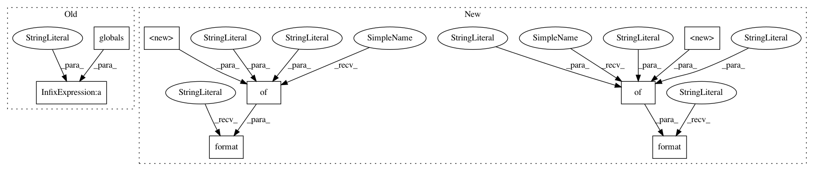

bbe15496db3bd99d8795630056734f55775e47fb,cellprofiler/modules/measureimagequality.py,MeasureImageQuality,add_image_group,#MeasureImageQuality#Any#,231
Before Change
group.append("divider", cps.Divider(line=True))
group.append("image_names", cps.ImageNameSubscriberMultiChoice(
"Select the images to measure", doc=\
*(Used only if “%(O_SELECT)s” is chosen for selecting images)*
Choose one or more images from this list. You can select multiple images
by clicking using the shift or command keys. In addition to loaded
images, the list includes the images that were created by prior modules. % globals()))
group.append("include_image_scalings", cps.Binary(
"Include the image rescaling value?",
After Change
group.append("check_saturation", cellprofiler.setting.Binary(
text="Calculate saturation metrics?",
value=True,
doc=\
Select *{YES}* to calculate the saturation metrics
*{F_PERCENT_MAXIMAL}* and *{F_PERCENT_MINIMAL}*, i.e., the
percentage of pixels at the upper or lower limit of each individual
image.
For this calculation, the hard limits of 0 and 1 are not used because
images often have undergone some kind of transformation such that no
pixels ever reach the absolute maximum or minimum of the image format.
Given the noise typical in images, both these measures should be a low
percentage but if the images were saturated during imaging, a higher
than usual *{F_PERCENT_MAXIMAL}* will be observed, and if there are
no objects, the *{F_PERCENT_MINIMAL}* value will increase.
.format(**{
"YES": cellprofiler.setting.YES,
"F_PERCENT_MAXIMAL": F_PERCENT_MAXIMAL,
"F_PERCENT_MINIMAL": F_PERCENT_MINIMAL
}
)
))
group.append("check_intensity", cellprofiler.setting.Binary(
text="Calculate intensity metrics?",
value=True,
doc=\
Select *{YES}* to calculate image-based intensity measures, namely the
mean, maximum, minimum, standard deviation and median absolute deviation
of pixel intensities. These measures are identical to those calculated
by **MeasureImageIntensity**.
.format(**{
"YES": cellprofiler.setting.YES
}
)
))
group.append("calculate_threshold", cellprofiler.setting.Binary(
text="Calculate thresholds?",
value=True,
doc=\
Automatically calculate a suggested threshold for each image. One
indicator of image quality is that these threshold values lie within a
typical range. Outlier images with high or low thresholds often contain
artifacts.))
group.append("use_all_threshold_methods", cellprofiler.setting.Binary(
text="Use all thresholding methods?",
value=False,
doc=\
*(Used only if image thresholds are calculated)*
Select *{YES}* to calculate thresholds using all the available
methods. Only the global methods are used.
While most methods are straightfoward, some methods have additional
parameters that require special handling:
- *{TM_OTSU}:* Thresholds for all combinations of class number,
minimization parameter and middle class assignment are computed.
- *Mixture of Gaussians ({TM_MOG}):* Thresholds for image coverage
fractions of 0.05, 0.25, 0.75 and 0.95 are computed.
See the **IdentifyPrimaryObjects** module for more information on
thresholding methods.
.format(**{
"YES": cellprofiler.setting.YES,
"TM_OTSU": centrosome.threshold.TM_OTSU,
"TM_MOG": centrosome.threshold.TM_MOG
}
)
))
group.threshold_groups = []
In pattern: SUPERPATTERN
Frequency: 3
Non-data size: 8
Instances
Project Name: CellProfiler/CellProfiler
Commit Name: bbe15496db3bd99d8795630056734f55775e47fb
Time: 2018-02-08
Author: bowdenm@spu.edu
File Name: cellprofiler/modules/measureimagequality.py
Class Name: MeasureImageQuality
Method Name: add_image_group
Project Name: CellProfiler/CellProfiler
Commit Name: bbe15496db3bd99d8795630056734f55775e47fb
Time: 2018-02-08
Author: bowdenm@spu.edu
File Name: cellprofiler/modules/measureimagequality.py
Class Name: MeasureImageQuality
Method Name: add_image_group
Project Name: CellProfiler/CellProfiler
Commit Name: bff3172782d3ce86f5535f43d3dc0770d393eb6c
Time: 2017-03-20
Author: mcquin@broadinstitute.org
File Name: cellprofiler/modules/expandorshrinkobjects.py
Class Name: ExpandOrShrinkObjects
Method Name: create_settings
Project Name: CellProfiler/CellProfiler
Commit Name: 0c64193dd9108934400494fffa41d24f3df1573c
Time: 2017-06-28
Author: mcquin@users.noreply.github.com
File Name: cellprofiler/modules/measuretexture.py
Class Name: MeasureTexture
Method Name: create_settings